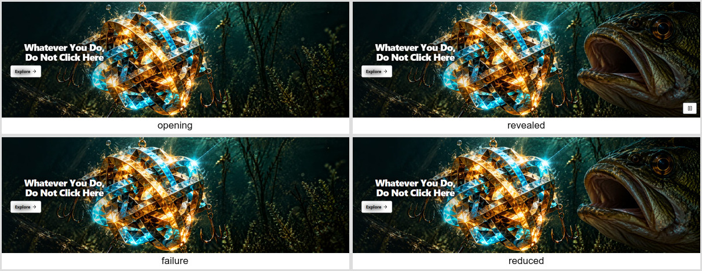
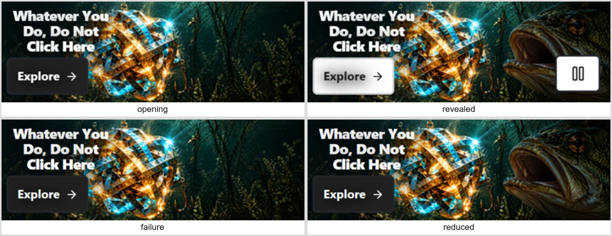

Actual final-build browser frames. Filmstrip times are relative to Next activation, not exact hardware scanout. State sheets include the keyboard-revealed control when focused. Source masters remain archival.

